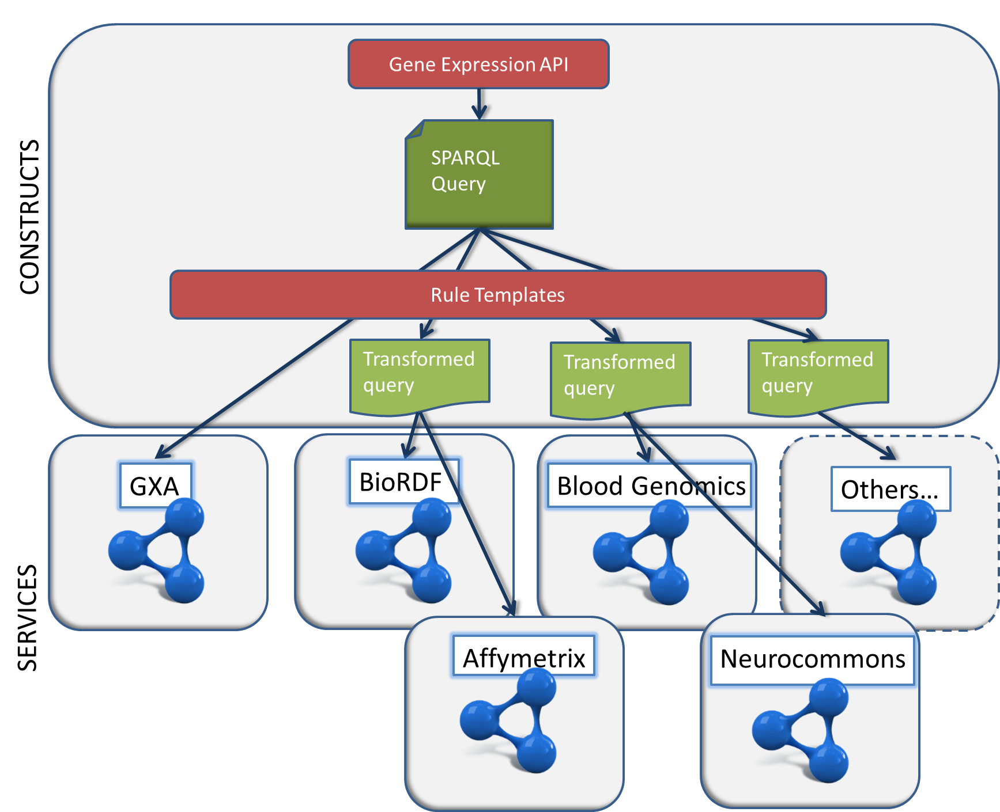

One Semantic Web API for Gene Expression
This project uses SPARQL 1.1 to investigate multiple gene expression data sources. We have included the following data sources:
Gene Expression Atlas;
W3C BioRDF provenance of microarray experiments;
Blood Genomics
Each data source has been available through a SPARQL endpoint. To achieve data integration, query templating is used by resorting to SPARQL CONSTRUCT and SPARQL SERVICE.
1) Integration of data from multiple SPARQL endpoints
2) Mapping of queries across SPARQL endpooints with different data schemas.
